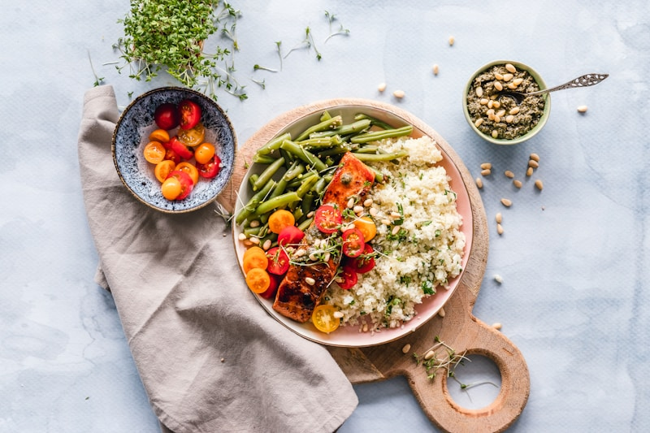
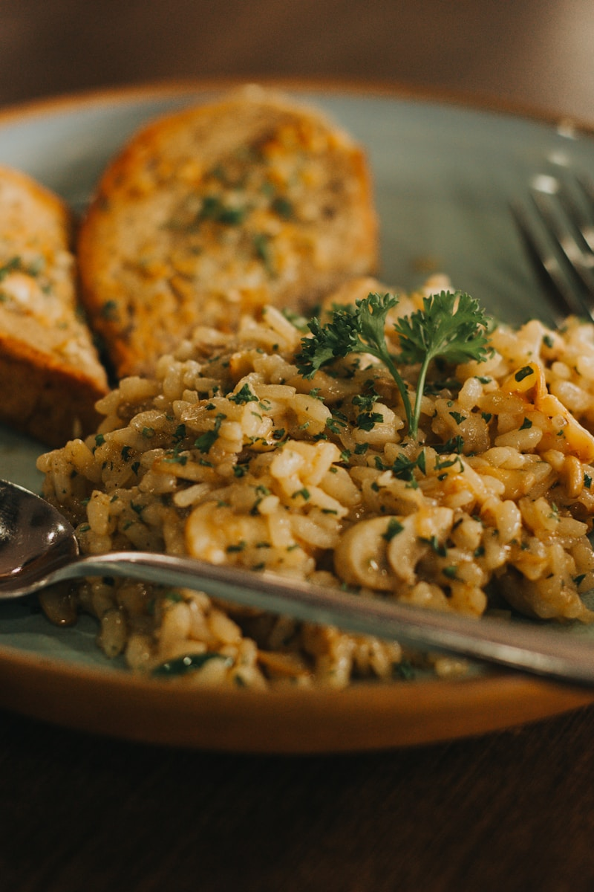
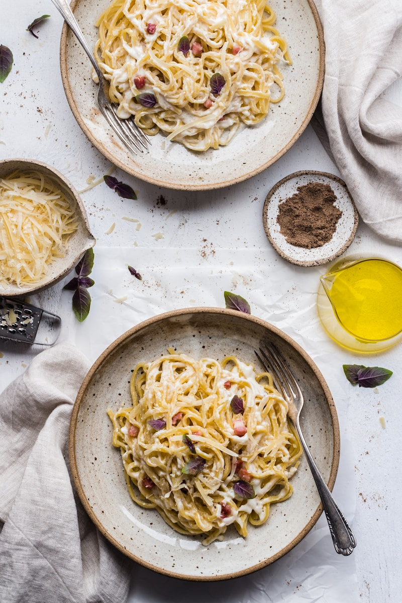

[ STUDY RESEARCH // ARCHIVE ]
Sourdough bulk rises, woodfired heat curves, & emulsion testing logs.
A structured collection of technical articles on wild yeast rising rates, oven heat conduction speeds, and emulsified whisk calibrations.
 Yeast proof // Hydration
Yeast proof // Hydration
Dough Expansion: Yeast Proofing Levels
How gas expansion volumes and proofing times prevent sourdough boule collapse under cold rises.
 Emulsion whip // Shear rates
Emulsion whip // Shear rates
Active Emulsion: Whisk Speed Bounds
Measuring viscosity drop curves across high-shear whisks to build stable vinaigrette dressings.

Hearth ovens // Fire logsHearth Convection: Heat Conduction Speeds
How thermal conduction limits inside hot stone ovens preserve pizza crust structures.
Gluten Matrix: Protein Stretch Limits
Evaluating dough folding schedules to lock protein fibers cleanly without dough tearing.

Dough water // Flour curvesWater Ratios: Flour Hydration Tolerances
Measuring ambient humidity variables to adapt water levels across continuous bread runs.
 Acid ratio // Emulsion logs
Acid ratio // Emulsion logs
Acid Stability: Vinaigrette Shelf Bounds
How vinegar drop densities and whisk rest cycles hold dressing volumes down to flat limits.
 Oven heat // Stone bounds
Oven heat // Stone bounds
Oven Conductions: Stone energy releases
Recording stone block heat absorption speeds during continuous wood-fired baking runs.
 Rest rest // Rest variables
Rest rest // Rest variables
Rest Intervals: Dough Relaxation Ratios
Analyzing rest timings to align gluten structures before final shaping on wooden boards.
 Air intake // Whisk clearances
Air intake // Whisk clearances
Whisk Profiles: Air Intake Metrics
Evaluating vertical whisk clearances to avoid emulsion failure during egg white whips.
Artisanal Grain: Milling Temperature Limits
Measuring grain heat rises across stone mills during continuous flour grinding sweeps.

Yeast restoration // Vintage bakingVintage Recipes: Yeast Restorations
How pH-neutral sugar waters restore dried yeast cultures from antique family baking tins.
 Baskets reel // Friction bounds
Baskets reel // Friction bounds
Proofing baskets: Friction Clearances
Calibrating cane basket gaps to protect dough skin from sticking sags during final proofs.